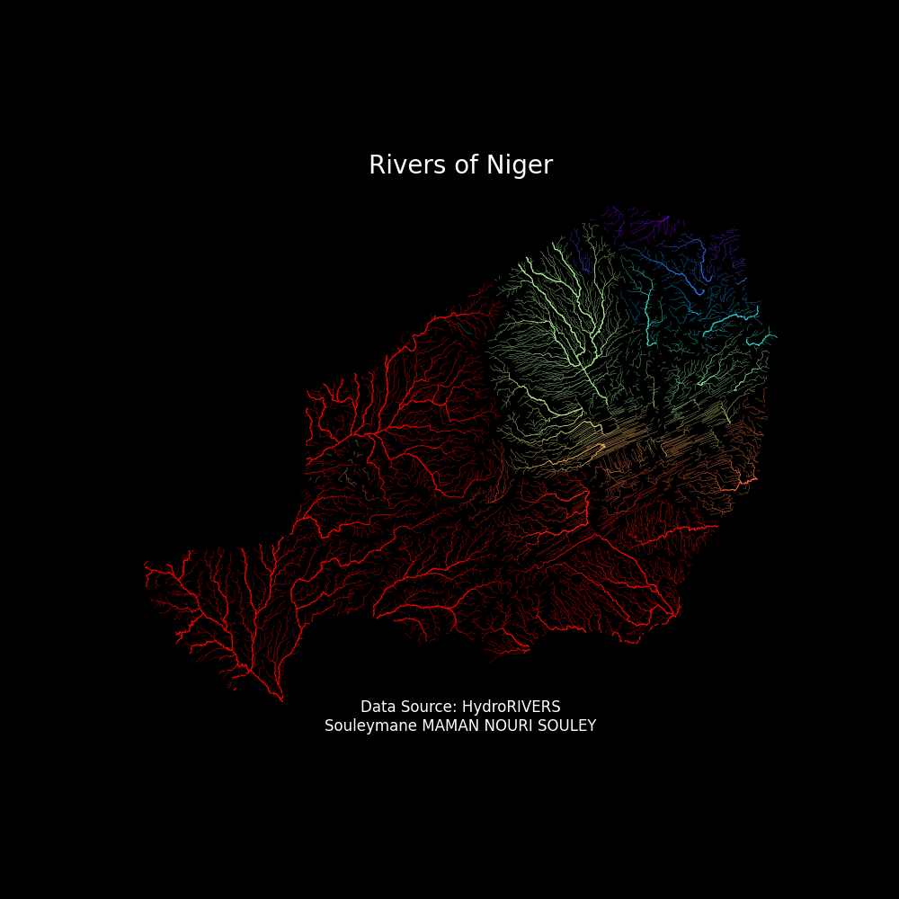

Biography
Souleymane Maman Nouri Souley is a dedicated environmental scientist and researcher with a strong background in Fisheries, Aquaculture, Climate Change, Marine Sciences, and Environmental Assessment. Currently pursuing a Master's in Climate Change and Marine Sciences at the Atlantic Technical University in Cabo Verde. His expertise includes remote sensing, water quality monitoring etc.
Souleymane's academic journey began with a Bachelor's degree in Environment and Ecology from Université de Diffa, Niger, where he specialized in Fisheries and Aquatic Resources Management. He furthered his education with a Master's in Environmental Assessment and Sustainable Development from the same university, conducting significant research on the population dynamics of Mormyridae in the Niger River.
Professionally, Souleymane has gained valuable experience through various roles, including internships and volunteering. For his Bachelor's degree, he interned at the General Directorate of Environment and Water and Forests in Niger, where he conducted fish farming experiments at the NGO ONIRES MAHALI. His work involved carrying out a comparative study of two types of fish feed one industrial and imported, and the other produced on the farm on two species of fish from the Claridae family (Clarias gariepinus and Heterobranchus bidorsalis). For his Master's degree, he continued his internship at the same directorate, further enhancing his research and practical skills.
Souleymane is also an active volunteer with several organizations focused on climate change and environmental conservation, including Climate Change Africa Opportunities, YOUNGO, Climate Solution International, Global Youth Biodiversity Network, SDG7 Youth Constituency, and OpenStreetMap. His volunteer work involves engaging in community-based conservation efforts, promoting sustainable development, and contributing to global environmental initiatives.
He has been involved in several impactful projects, such as analyzing chlorophyll-a concentration in the Gulf of Guinea using MODIS satellite data and processing Aerosol Optical Depth (AOD) data for atmospheric assessments in Cabo Verde. He is also a key contributor to the Digital Twin Cabo Verde project, which integrates various environmental data to create a comprehensive digital model of the region.
His skills encompass coding in Python, R, and MATLAB, remote sensing, hyperspectral imaging, and geospatial analysis using ArcGIS and QGIS. Souleymane's fieldwork experience includes water quality sampling, biodiversity assessments, and data collection in coastal environments.
Souleymane's research has been recognized through publications and presentations, including a research article on the exploitation parameters for the Mormyrus rume population in the River Niger and a poster presentation at international conferences.
With a passion for environmental conservation and sustainable development, Souleymane Maman Nouri Souley continues to contribute to the scientific community through his research and fieldwork, aiming to make a positive impact on the environment and society.
Portfolio
Education
- Master’s in Climate Change and Marine Sciences (MRP-CCMS)
Atlantic Technical University (UTA), Cabo Verde - Ongoing - Master in Environmental Assessment and Sustainable Development
Université de Diffa, Niger - 2021–2023 - Bachelor in Environment and Ecology
Université de Diffa, Niger - 2016–2019
Research Experience
- Extreme Events of Saharan Dust Plume Transport over Cabo Verde
- Population of Mormyridae on the Niger River in the Niamey Area
- Volunteer Research Assistant - GDEWF
Professional Experience
- Volunteer - Environmental Monitoring
- Research Intern - GDEWF & NGO ONIRES MAHALI
Technical Skills
- Remote Sensing: Hyperspectral imaging, MODIS, Google Earth Engine
- Data Analysis: Python, R, MATLAB
- GIS: ArcGIS, QGIS, geospatial analysis
Publications and Presentations
- Research Articles:
- Exploitation Parameters for the Mormyrus rume Population in the River Niger in Niamey
Journal: Egyptian Journal of Aquatic Biology and Fisheries - First Assessment of Mormyridae Diversity and Abundance in the Niger River at Niamey, Niger
Journal: Moroccan Journal of Agricultural Sciences
- Exploitation Parameters for the Mormyrus rume Population in the River Niger in Niamey
- Poster Presentations:
- Population of Mormyridae on the Niger River in Niamey Area: Diversity, Structure, and Exploitation
Event: 9th WORLD FISHERIES CONGRESS, Seattle, Washington, USA - Population of Mormyridae on the Niger River in Niamey Area: Diversity, Structure, and Exploitation
Event: International Conference on Oceanography, Marine Biology, Sustainable Fisheries, and Aquaculture - First Assessment of Mormyridae Diversity and Conservation in the Niger River at Niamey, Niger
Event: First International Conference of the Pan African University organized by PAULESI, Ibadan, Nigeria
- Population of Mormyridae on the Niger River in Niamey Area: Diversity, Structure, and Exploitation
Volunteer Work
- YOUNGO - United Nations Climate Change Youth Constituency
- Global Youth Biodiversity Network
- Climate Change Africa Opportunities